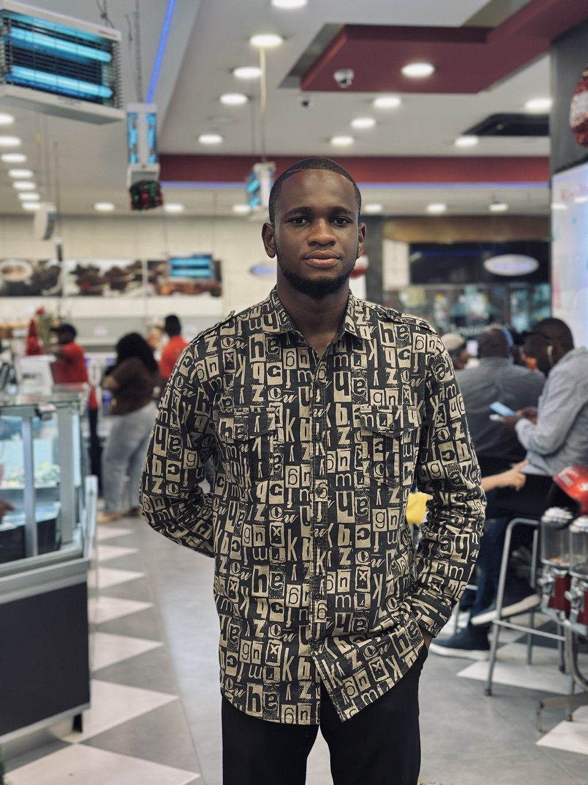

Présentation

À propos de moi
Je m'appelle Déo Mande, développeur web full-stack avec plus de 2 ans d'expérience. J'ai choisi de vivre et travailler à Haut Sel pour son environnement inspirant et sa communauté créative.
"Le code est une forme d'art, et chaque projet est une nouvelle toile où je peux exprimer ma créativité technique."
Technologies maîtrisées
HTML5/CSS3
JavaScript
React
Node.js
Python
Django
Git
GitHub
Haut Sel
Haut Sel est bien plus qu'un lieu de travail pour moi. C'est une source d'inspiration quotidienne. La beauté des paysages et l'air pur stimulent ma créativité et me permettent de développer des solutions innovantes.
"Travailler à Haut Sel, c'est allier le calme inspirant de la nature à la puissance de la technologie moderne."
Pourquoi Haut Sel ?
- Environnement calme et propice à la concentration
- Source d'inspiration pour des designs innovants
- Équilibre parfait entre vie professionnelle et personnelle
- Communauté de professionnels créatifs et dynamiques